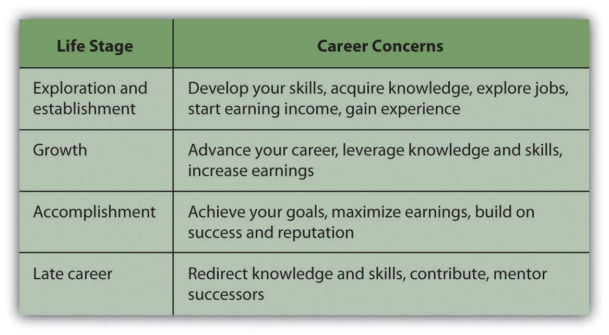
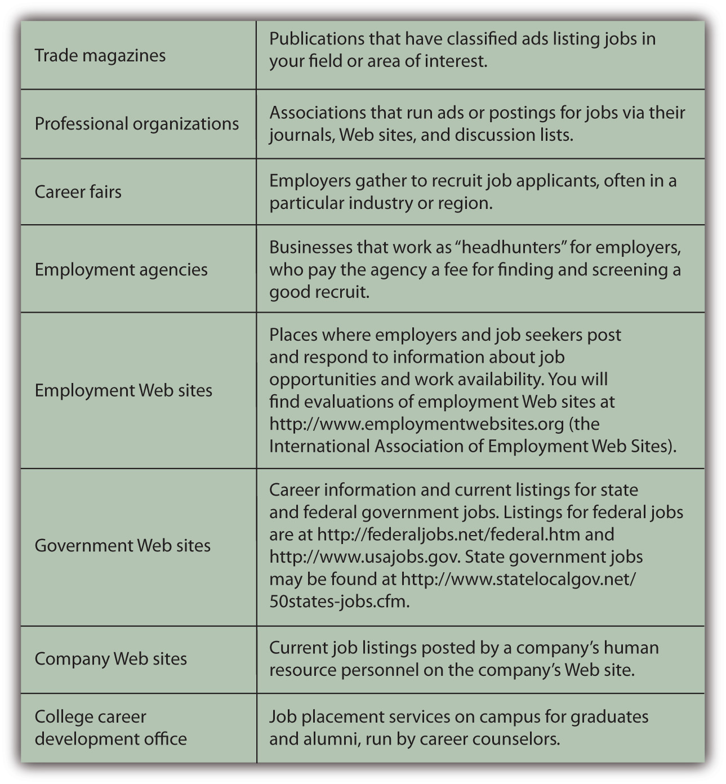
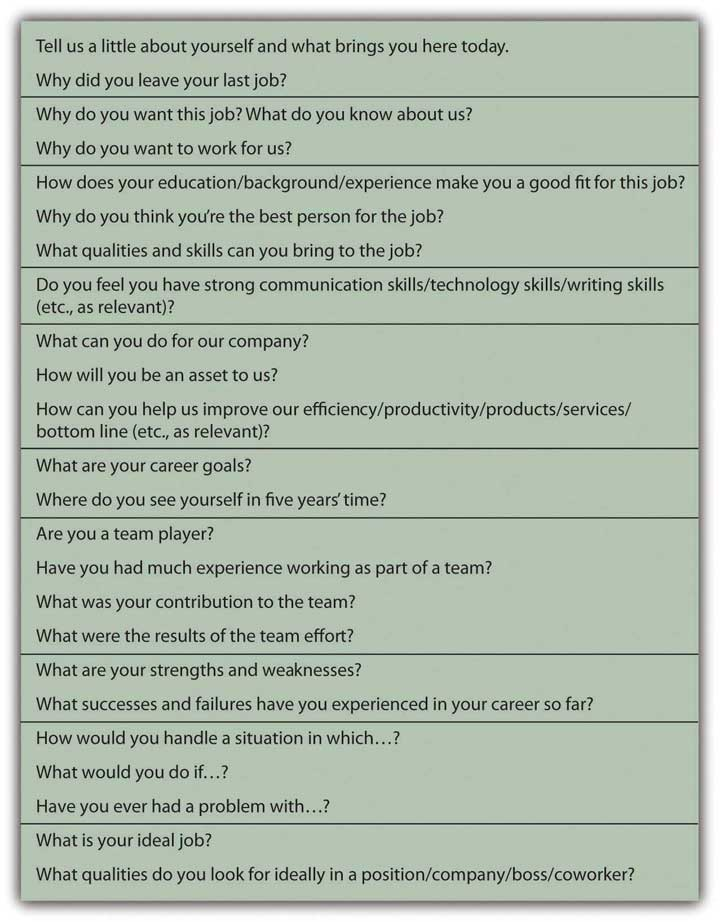

Bryon always knew he wanted to be a fireman. He can remember as a kid being elated by the fire trucks as they screamed past on their way to helping people. He has always been sure that a career in protection services is the right choice for him. Given that people will always need those services, Bryon figures he’ll have job security, will be able to raise a family, and will have many chances for advancement along with plenty of thrills on the job.
Although she is starting out as a lab technician, Tomika is not clear about her career ambitions. She wants to do something fun and interesting, where she won’t hate going to work every day—but mostly she wants a career that will afford her the opportunity for professional advancement, increasing pay, and the chance to raise a family. She has enjoyed her science courses at school. She figures that since health care is a growth industry, with technological advancements and the aging population, she will choose a career in health.
Some people know what they want to do at an early age. For most people, however, the path is just not that clear. Career planning and development can be a process of trial and error as you learn your abilities and preferences by trying them out. Sometimes a job is not what you thought it would be, sometimes you are not who you thought you would be. The better your decision-making process—the more objective and methodical it is—the less trial and error you will have to endure.
Your financial sustainability depends on having income to support your spending, saving, and investing. A primary component of your income—especially earlier in your adult life—is income from your wages or salary, that is, from working, selling your labor. Your ability to maximize the price that your labor can bring depends on the labor market you choose and your ability to sell yourself. Those abilities will be called on throughout your working life. You will make job and career choices for many different reasons. This chapter looks only at the financial context of those choices.
A person starting out in the world of work today can expect to change careers—not just jobs—an average of seven times before retiring.U.S. Department of Labor, Bureau of Labor Statistics, “National Longitudinal Survey of Youth,” http://www.bls.gov/nls/nlsy79r19sup1.pdf (accessed July 23, 2009). Those career changes may reflect the process of gaining knowledge and skills as you work or changes in industry and economic conditions over several decades of your working life. Knowing this, you cannot base career decisions solely on the circumstances of the moment. However, you also cannot ignore the economics of the job market.
You may have a career in mind but have no idea how to get started, or you may have a job in mind but have no idea where it may lead. If you have a career in mind, you should research its career pathA planned progression of jobs or steps to advance in a profession or career., or sequence of steps that will enable you to advance. Some careers have a well-established career path—for example, careers in law, medicine, teaching, or civil engineering. In other occupations and professions, career paths may not be well defined.
Before you can even focus on a career or a job, however, you need to identify the factors that will affect your decision making process.
The job market is the market where buyers (employers) and sellers (employees) of labor trade, but it usually refers to the possibilities for employment and its rewards. These will differ by field of employment, types of jobs, and geographic region. The opportunities offered in a job market depend on the supply and demand for jobs, which in turn depend on the need for labor in the broader economy and in a specific industry or geographic area.
The economic cycle can affect the aggregate job market or employment rate. If the economy is in a recession, the economy is producing less, and there is less need for labor, so fewer jobs are available. If the economy is expanding, production and its need for labor are growing.
Typically, a recession or expansion affects different industries in different ways. Some industries are cyclical and some are countercyclical. For example, in a recession, consumer spending is often down, so retail shops and consumer goods manufacturers—in cyclical industries—may be cutting jobs. Meanwhile, more people are continuing their education to improve their skills and the chances of getting a job, which is harder to do in a recession, so jobs in higher education—a countercyclical industry—may be increasing.
For example, it would have been a bad time in the spring of 2009 to think about a career in auto manufacturing in the United States with Ford, General Motors, and Chrysler all announcing massive layoffs, plant closings, and facing bankruptcy. The industry may survive, but it probably won’t be able to rebuild that fast.
Global events such as an outbreak of war, the nationalization of a scarce natural resource, the price of a critical commodity such as crude oil, the collapse of a vital industry, and so on, may also cause changes in the global economy that affect job markets.
Another macroeconomic factor is change in technology, which can open up new fields of employment and make others obsolete. With the advent of digital cameras, for example, even single-use conventional cameras are no longer being manufactured in great quantity, and film developers are not needed as much as they once were. However, there are more jobs for developers of electronic cameras and digital applications for creating images and using digital images in communications channels, such as mobile phones.
Figure 18.2 Workers in the Vacuum Cleaner Factory at Reedsville, West Virginia
Library of Congress, February 1937
A demographic shift also can change entire industries and job opportunities. A historical example, repeated in many developing countries, is the mass migration of rural families to urban centers and factory towns during an industrial revolution. Changes in the composition of a society, such as the average age of the population, also affect job supply and demand. Baby booms create demand for more educators and pediatricians, for example, while aging populations create more demand for goods and services relating to elder care.
Social and cultural factors affect consumer behavior, and consumer preferences can change a job market. Demand for certain kinds of products and services, for example, such as organic foods, hybrid cars, clean energy, and “green” buildings, can increase job opportunities in businesses that address those preferences.
Thus, changes in demand for a product or service will change the need for labor to produce it. On a larger scale, economies typically shift their focus over time as different industries become “growth” industries, that is, the drivers of growth in the economy. In the mid-twentieth century, the United States was a manufacturing economy, driven by the production of durable and consumer goods, especially automobiles. In the 1990s, the computer/internet/tech sector had a larger role in driving growth in the U.S. economy due to technological breakthroughs. Currently, education and health care services are the growing sectors of the economy due to demographic and political changes and needs.U.S. Department of Labor, Bureau of Labor Statistics, “Industries with the Fastest Growing and Most Rapidly Declining Wage and Salary Employment, 2006–16,” in “Industry Output and Employment Projections to 2016,” Monthly Labor Review, November 2007, http://www.bls.gov/emp/empfastestind.htm (accessed August 5, 2009).
If you are entrepreneurial and intend to be self-employed, your job opportunities may be affected by the ease with which you can start and maintain a business. Ease of entry, in turn, may be affected by macro factors such as the laws and regulations in the state where you intend to do business and the existing competition in the market you are entering.
The labor market is competitive, not just at an individual level but on a global, industrywide scale. As transportation and especially communication technology has improved, many steps in a manufacturing or even a service process may be outsourced, done by foreign labor. That competition affects the U.S. job market as jobs are moved overseas, but it also opens new markets in developing economies. You may be interested in an overseas job, as American companies open offices in Asian, South American, African, and other countries. Globalization affects job markets everywhere.
Whether you are employed or self-employed, whether you look forward to going to work every day or dread it, employment determines how you spend most of your waking hours during most of your days. Employment determines your income and thus your lifestyle, your physical well-being, and to a large extent your satisfaction or emotional well-being. Everyone has a different idea about what a “good job” is. That idea may change over a lifetime as circumstances change, but some specific micro factors will weigh on your decisions, including your
Abilities are innate talents or aptitudes, what you are capable of or good at. Circumstances may inhibit your use of your abilities or may even cause disabilities. However, you often can develop your abilities—and compensate for disabilities—through training or practice. Sometimes you don’t even know what abilities you have until some experience brings them out.
When Tomika says she is “good with people” or when Bryon says that he is a “natural athlete,” they are referring to abilities that will make them better at some jobs than others. Abilities can be developed and may require upkeep; athletic ability, for example, requires regular fitness workouts to really be maintained. You also may find that you lack some abilities, or think you do because you’ve never tried using them.
Usually, by the time you graduate from high school, you are aware of some of your abilities, although you may not be aware of how they may help or hinder you in different jobs. Also, your idea of your abilities relative to others may be skewed by your context. For example, you may be the best writer in your high school, but not compared to a larger pool of more competitive students. Your high school or college career office may be able to help you identify your abilities and skills and applying that knowledge to your career decisions.
Your job choices are not predetermined by your abilities or apparent lack of them. An ability can be developed or used in a way you have not yet imagined. A lack of ability can sometimes be overcome by using other talents to compensate. Thus, ability is a factor in your job decisions, but certainly not the only one. Your knowledge and skills are equally—if not more—important.
Skills and knowledge are learned attributes. A skill is a process that you learn to apply, such as programming a computer, welding a pipe, or making a customer feel comfortable making a purchase. Knowledge refers to your education and experience and your understanding of the contexts in which your skills may be applied.
Education is one way to develop skills and knowledge. In secondary education, a vocational program prepares you to enter the job market directly after high school and focuses on technical skills such as baking, bookkeeping, automotive repair, or building trades. A college preparatory program focuses on developing general skills that you will need to further your formal education, such as reading, writing, research, and quantitative reasoning.
Past high school or a year or two of community college, it is natural to question the value of more education. Tuition is real money and must be earned or borrowed, both of which have costs. There is also the opportunity cost of the wages you could be earning instead.
Education adds to your earning power significantly, however, by raising the price of your labor. The more education you have, the more knowledge and skills you have. The smaller the supply of labor with your particular knowledge and skills, the higher the price your labor can command. This relationship is the rationale for becoming specialized within a career. However, both specialization and versatility may have value in certain job markets, raising the price of your labor.
More education also confers more job mobility—the ability to change jobs when opportunities arise, because your knowledge and skills make you more useful, and thus valuable, in more ways. Your value as a worker or employee enables you to command higher pay for your labor.
Statistics show a consistent relationship between education and earnings. Over a lifetime of work, say about forty to forty-five years, in the United States a person with a college degree will earn over a million dollars more than someone with a high school diploma. According to a recent study,
“There is a positive correlation between higher levels of education and higher earnings for all racial/ethnic groups and for both men and women…The income gap between high school graduates and college graduates has increased significantly over time. The earnings benefit is large enough for the average college graduate to recoup both earnings forgone during the college years and the cost of full tuition and fees in a relatively short period of time.”Sandy Baum and Jennifer Ma, Education Pays: The Benefits of Higher Education for Individuals and Society (Princeton, NJ: The College Board, 2007).
Not only are you likely to earn more if you are better educated, but you are also more likely to have a job with a pension plan, health insurance, and paid vacations—benefits that add to your total compensation. Although it may seem quite expensive to you now, your college education is definitely worth it: worth the opportunity cost and worth the direct costs of tuition, fees, and books.Sandy Baum and Jennifer Ma, Education Pays: The Benefits of Higher Education for Individuals and Society (Princeton, NJ: The College Board, 2007).
Your choices will depend on the characteristics and demands of a job and how they fit your unique constellation of knowledge, skills, personality, characteristics, and aptitudes. For example, your knowledge of finance, visual pursuit skills, ability to manage stress and tolerate risk, aptitude for numerical reasoning, enjoyment of competition, and preference to work independently may suit you for employment as a stockbroker or futures trader. Your manual speed and accuracy, verbal comprehension skills, enjoyment of detail work, strong sense of responsibility, desire to work regular hours in a small group setting, and preference for public service may suit you for training as a court stenographer. Your word fluency, social skills, communication skills, organizational skills, preference to work with people, and desire to lead others may suit you for jobs in education or sales. And so on.
Lifestyle choices affect the amount of income you will need to achieve and maintain your lifestyle and the amount of time you will spend earning income. Lifestyle choices thus affect your career path and job choices in key ways. Typically, when you are beginning a career and have few, if any, dependents, you are more willing to sacrifice time and even pay for a job that will enhance your skills and help you to progress along your career path. As a journalist, for example, you may volunteer for an overseas post; or as a nurse you may volunteer for extra rotations. As a computer programmer, you may assist in the development of open source software.
As you advance in your career, and perhaps become more settled in your life—maybe start a family—you are less willing to sacrifice your personal life to your career, and may seek out a job that allows you to earn the income that supports your dependents while not taking away too much of your time.
Your income needs typically increase as you have dependents and are trying to save and accumulate wealth, and then decrease when your dependents are on their own and you have accumulated some wealth. Your sources of income shift as well, from relying on income from labor earlier in your life to relying on income from investments later.
When your family has grown and you once again have fewer dependents, you may really enjoy fulfilling your ambitions, as you have decades of skills and knowledge to apply and the time to apply them. Increasingly, as more people retain their health into older age, they are working in retirement—earning a wage to improve their quality of life or eliminate debt, turning a hobby into a business, or trying something they have always wanted to do. Your life cycle of career development may follow the pattern shown in Figure 18.4 "Lifecycle Career Development".
Figure 18.4 Lifecycle Career Development
Regardless of age, your lifestyle choices will affect your job opportunities and career choices. For example, you may choose to live in a specific geographic region based on its
Sometimes you may choose to sacrifice your lifestyle preferences for your ambitions, and sometimes you may sacrifice your ambitions for your preferences. It’s really a matter of figuring out what matters at the time, while keeping in mind the effect of this decision on the next one.
Macroeconomic factors affect job markets, including
Microeconomic factors influence job and career decisions, including
A job search is a part of everyone’s life, sooner or later. It may be repeated numerous times throughout your career. You may initiate a job search in hopes of improving your position and career or changing careers, or you may be forced into the job market after losing your job. Whatever the circumstances, when you look for a job you are seeking a buyer for your labor. The process of having to “sell” yourself (your time, energy, knowledge, and skills) is always revealing and valuable.
Before you can look for a job, you need to have an idea of what job market you are in. The same macro factors that you consider in your choice of career may make your job search easier or harder. Ultimately, they may influence your methods of searching or even your job choice itself. For example, as unemployment has increased in the wake of the most recent financial crisis, the labor market has become much more competitive. In turn, job seekers have become much more creative about advertising their skills—from broader networking to papering a neighborhood with brochures on windshields—and more accepting of job conditions, including lower compensation. A good place to start is the U.S. Department of Labor’s “Occupational Outlook Handbook.”See, for example, U.S. Department of Labor, Bureau of Labor Statistics, http://www.bls.gov/oco, and “Tomorrow’s Jobs,” http://www.bls.gov/oco/print/oco2003.htm (accessed July 20, 2009). The handbook is updated annually. For hundreds of industries and specific jobs it tells you the training and education you need, what you will earn and what your job prospects are, what the work entails, and what the working conditions are like. The site also offers valuable tips on conducting job searches.
Knowing the job classification and industry name will focus your search process and make it more efficient. Once you understand your job market, look at the macro and micro factors that affect it along with your personal choices. For example, knowing that you are interested in working in business, transportation, or the leisure and hospitality industry, you are ready to research that field more and plan your job search.
You are looking for a buyer of your labor, so you need to find the markets where buyers shop. One of the first things to do is find out where jobs in your field are advertised. Jobs may be advertised in
Figure 18.5 "Sources of Information about Jobs" describes these venues in more detail.
Figure 18.5 Sources of Information about Jobs
Consider Sandy, for example, who is graduating with a bachelor’s degree in hospitality management. Her dream job is to work at an inn or bed and breakfast in a resort location. The Professional Association of Innkeepers International (PAII) offers a Web site and journal—good places to start reading and learning about the industry. It also lists upcoming trade conferences that may be a good opportunity for Sandy to meet some people in the industry.The Professional Association of Innkeepers International, http://www.paii.org (accessed July 23, 2009).
Browsing online, Sandy learns about a big job fair coming to her region, sponsored by the PAII in association with a chamber of commerce and an economic development agency. This is her chance to meet recruiters in her industry and find out about actual opportunities. Each prospective employer will have a table, and Sandy will go from table to table, getting information, dropping off her résumé, and possibly setting up interviews.
She also plans to register with an employment agency that specializes in hotel management for smaller hotels and inns. The agency will screen her application and try to match her with appropriate jobs in its listings. For a specified time it will keep her résumé on file for future opportunities.
Sandy’s strategy includes posting her résumé on employment web sites, such as Monster.com, and Careerbuilder.com. Browsing jobs online, Sandy discovers there is a strong seasonal demand for hospitality workers on cruise ships, and this gives her an idea. If the right choice doesn’t come up right away, maybe a summer job working for a cruise line would be a good way to develop her knowledge and skills further while looking for her dream job in management.
Sandy needs to research destinations as well as businesses and wants to talk with people directly. She knows that cold calls—calling potential employers on the phone as a complete unknown—is the hardest way to sell herself. In any industry, cold calling has a much lower success rate than calling with a referral or some connection—otherwise known as networking.
NetworkingA process of using personal contacts to get information and find job opportunities. is one of the most successful ways of finding a job. It can take many forms, but the idea is to use whatever professional, academic, or social connections you have to enlist as many volunteers as possible to help in your job search. According to popular theory, your social networks can be seen as assets that potentially help you build wealth. That is, the number and positions of people you can network with and the economically viable connections you can have with them are a form of capital—social capitalConnections within and between social networks that may be useful, as an asset, in a market..Robert Putnam, Bowling Alone: The Collapse and Revival of American Community (New York: Simon & Schuster, 2000).
Word of mouth is a powerful tool, and the more people know about your job search, the more likely it is that they or someone they know will learn of opportunities. Sandy’s strategy also includes joining online career networking sites, such as LinkedIn, and discussion lists for people in the hospitality industry. Sandy finds a helpful Yahoo! group called The Innkeeper Club and posts a query about what employers look for in a manager.
While Sandy was in college getting her degree in hospitality management, her best friend from high school was happily styling hair in a local salon. Sandy never thought to network through her friend, but it turns out that one of her friend’s clients has a sister who owns a country inn with her husband, and they are thinking about hiring someone to manage their enterprise. After driving several hours to meet them, Sandy learns they have changed their minds and are not hiring now. However, they know of two other innkeepers who may be looking for help. Since they are impressed with Sandy, they are happy to pass along her name and résumé.
That’s how networking works—you just never know who may be helpful to you. The obvious people to start with are all the people that you know: former professors, former employers, friends, family, friends of family, friends of friends, family of friends, and so on. The more people you can talk with or send your résumé to (i.e., impress), the greater the chances that someone will make an offer.
Another good networking strategy is to call or e-mail people working in the industry, individuals who are currently in or just above the position you’d like to have, and ask to talk with them about their work. If you make it clear that you are not asking for or expecting a job offer from them, many people will be happy to take a half hour to discuss their jobs with you. They may have valuable tips or leads for you or be willing to pass along your name to someone else who does.
To get a job you will have to convince someone who does not know you that you are worth paying for. You have an opportunity to prove that in your cover letter and résumé and again in your interview.
The cover letter, whether mailed or an e-mailed, is your introduction to your prospective employer. You have three paragraphs on one page to briefly introduce yourself and show how you can make a profitable contribution to the company. The objective of the cover letter is to get the reader to look at your résumé with a favorable impression of you created by the letter.
Your first paragraph should establish your purpose in making contact, the reason for the letter. You should make it clear what job you are applying for and why you are making this particular contact. If someone referred you, mention him or her by name. If you met the addressee previously, remind him or her where and when that was, for example, “It was great to chat with you at the Jobs Fair in Cleveland last week.” The more specifically you can identify yourself and separate yourself from the pool of other job seekers, the better.
The second paragraph of your cover letter should summarize your background, education, and experience. All this information is on your résumé in more detail, so this is not the place to expound at length. You want to show briefly that you are qualified for the position and have the potential to make a contribution.
Your third paragraph is your opportunity to leave the door open for further communication. Make it clear where and how you can be reached and how much you appreciate the opportunity to be considered for the position.
The résuméA document that summarizes job experience, education, and civic activities. It is commonly used in the job application process., the summary list of your skills and knowledge, is what will really sell you to an employer, once you have made a good enough impression with the cover letter to get him or her to turn the page. A good résumé provides enough information to show that you are willing and able to contribute to your employer’s success—that it is worth it to hire you or at least to talk to you in an interview.
List the pertinent facts of where and how you can be reached: address, phone number, e-mail address. Your qualifications will be mainly education and experience. List any degrees, certificates, or training you have completed after high school. Be sure to include anything that distinguishes your academic career, such as honors, prizes, or scholarships.
List any employment experience, including summer jobs, even if they don’t seem pertinent to the position you are applying for. You may think that being a camp counselor has nothing to do with being a radiology technician, but it shows that you have experience working with children and parents, have held a position where you are responsible for others, and that you are willing to work during your school breaks, thus showing ambition. If you are starting out and can’t be expected to have lots of employment experience, employers looks for hints about your character—things like ambition, initiative, responsibility—that may indicate your success working for them.
Internships that you did in college or high school are also impressive, showing your willingness to go beyond the standard curriculum and learn by working—something an employer will expect you to continue to do on the job, too. While you are in school, you should recognize the value added by experiential learning and the positive impression that it will make. An internship can also give you a head start in networking if your supervisor will be a good reference or source of contacts for you. The internship may even result in a job offer; you may not necessarily want to accept, but at the very least, having an offer to fall back on takes some of the pressure off your search.
For each job, be clear about the position you held and the two most important duties or roles you performed. Don’t go into too much detail, however. The time to expand on your story is in the interview.
If you have done internships or volunteer work or if you are a member of civic or volunteer organizations, be sure to list those as well. They are hints about you as a person and may help you to stand out in the pool of applicants.
A common mistake is to list too much extra information on your résumé and to focus too much on what you want. For example, stating an objective such as “to obtain a great position in hotel management.” Your employer cares about what you can do for the company, not for yourself. The following are some tips for developing your résumé:
A myriad of sample résumés and sample cover letters may be found online, but be wary of templates that may not fit you or your prospective job. Employers in your field may have particular expectations for what should be on your résumé or how it should be structured. Maybe you should list your skills or perhaps your education first. Perhaps it would be preferable to list your past employment experiences in reverse chronology (with your most recent job first). Advice is plentiful about how to write a résumé, but there is no one right way or best way. Choose an appropriate style and format for your job category that will present you in the best possible light as a prospective employee.
Many employers want you to fill out an application form independently of or instead of a résumé. They may also ask for references, especially from former employers who are willing to recommend you. Be aware that hirers and human resources department personnel routinely follow up on references and letters of recommendation. Find out more about filling out employment applications at About.com at http://jobsearch.about.com/cs/jobapplications/a/jobapplication.htm and other sites.
There are many resources available in print and online to help you write a good résumé. In addition, résumé writing workshops and short courses are often held at community colleges or adult education centers.Ellen Gordon Reeves, Can I Wear My Nose Ring to the Interview? (New York: Workman Publishing, 2009).
The interview—a face-to-face conversation with a prospective employer—is your chance to get an offer. You want to make a good personal impression: dress professionally but in clothes that fit well and comfortably. Be polite and cordial but also careful not to assume too familiar a tone.
You may be asked a series of predetermined questions, or your interviewer may let the conversation develop through open-ended questions. The interviewer may let you establish its direction in order to learn more about how you think. However the conversation is guided, you want to be able to showcase your suitability for the job and what you bring to it. Figure 18.8 "Questions Prospective Employers Commonly Ask" identifies some questions employers commonly ask in job interviews.
Figure 18.8 Questions Prospective Employers Commonly Ask
Be prepared for interviewers who prefer to focus on general behavioral questions rather than on job specific questions. Behavioral interviewsA common type of job interview in which the candidate is asked about past behavior in a specific set of circumstances. emphasize your past actions as indicators of how you might perform in the future. The so-called STAR MethodA popular method of preparing narratives for behavioral interviews by referring to job situations, tasks, actions, and results. is a good approach to answering behavioral questions, as it helps you to be systematic and specific in making your past work experiences relevant to your present job quest. The STAR MethodThe STAR Method: http://web.mit.edu/career/www/guide/star.html, http://www.drexel.edu/SCDC/resources/STAR%20Method.pdf, http://www.officearrow.com/home/articles/the_officearrow_career_center/human_resources_and_job_search/p2_articleid/294/p142_id/294/p142_dis/3 (accessed August 5, 2009). is a process of conveying specific situations, actions, and outcomes in response to an interviewer’s question about something you did.
For example:
Question: We are looking for someone who is willing to take initiative in keeping our office systems working efficiently and who can work without a lot of direct supervision. Does that describe you?
Answer: Absolutely. For example, in my last job I noticed that the office supply system was not working well. People were running out of what they needed before letting me know what to order (Situation). I thought there needed to be a better way to anticipate and fill those needs based on people’s actual patterns of use (Task). So, I conducted a poll on office supply use and used that information to develop a schedule for the automatic resupply of key items on a regular basis (Action). The system worked much more smoothly after that. I mentioned it in my next performance review, and my boss was so impressed that she put me in for a raise (Results).
There are some questions employers should not ask you, however. Unless the information is a legal requirement for the job you are interviewing for, antidiscrimination laws make it illegal for an employer to ask you your age; your height or weight; personal information such as your racial identity, sexual orientation, or health; or questions about your marital status and family situation, such as the number of children you have, whether you are single, or if you are pregnant or planning to start a family.
It is also important for you to have questions to ask in an interview, so you should prepare a few questions for your interviewer. Questions could be about the company’s products or services, the company’s mission or goals, the work you would be doing, who you would be reporting to, where you would be located, and the opportunities for advancement. You want your question to be specific enough to show that you have already done some research on the company, its products, and markets. This is a chance to demonstrate your knowledge of the job, company, or industry—that you have done your homework—as well as your interest and ambition.
Unless your interviewer mentions compensation, don’t bring it up. Once you have the job offer, then you can discuss compensation, but in the interview you want to focus on what you can do for the company, not what the company can do for you.
You can also use the interview to learn more about the company. Try to pick up clues about the company’s mission, corporate culture, and work environment. Are people wearing business attire or “business casual”? Are there cubicles and private offices or a more open workspace? Are people working in teams, or is it more of a conventional hierarchy? You want to be in a workplace where you can be comfortable and productive. Be open-minded—you may be able to work quite well in an environment you have never worked in before—but think about how you can do your best work in that environment.
After your interview, send a thank you note, and follow up with a phone call if you don’t hear back. You may ask your interviewer for feedback—so that you can learn for future interviews—but don’t be surprised and be gracious, if you don’t get it. Always leave the door open. You never know.
A job offer should include details about the work you will be performing, the compensation, and the opportunity to advance from there. If any of that information is missing, you should ask about it.
In many jobs, you may be asked to do many things, especially in entry-level jobs, so the job description may be fairly vague. Your willingness to do whatever is asked of you (within the law and according to ethical standards) should be compensated by what you stand to gain from the job—in pay or in new knowledge and experience or in positioning yourself for your next job. Some jobs are better looked at as a kind of graduate education.
Your compensationPayment for labor, including wages, salaries, commissions, stock options, and fringe benefits such as health, disability, and life insurance. includes not only your wages or salary but also any benefits that the employer provides. As you read in previous chapters, benefits may include health and dental insurance, disability insurance, life insurance, and a retirement plan. Compensation also includes time off, sick days, and vacation days. You should understand the company’s policies and flexibility in applying them.
Know what your total compensation will be and whether it is reasonable for the job, industry, and current job market. Asking around may help, especially on online discussion groups with relative anonymity. People often are reluctant to disclose their compensation, and companies discourage sharing this information because it typically reveals discrepancies. For example, people hired in the past may be receiving less (or more) pay than people hired recently for the same position. In addition, gender gap—in which men receive higher pay than women in the same position—is often a problem.
To gauge how reasonable a job offer is, you can research professional associations about pay scales or find statistical averages by profession or region. Online resources include simple salary comparison calculators, such as the one at http://monster.salary.com. You also will find data and related articles linking salaries to specific job titles, area codes, states, educational levels, and years of work experience, for example, at http://www.payscale.com/research/US/Country=United_States/Salary.
Realistically compare the job offer to your needs. Different geographic areas have different costs of living, for example, so the same salary may afford you a very different lifestyle in Omaha than in New York City. Your employment compensation is most likely an important source—perhaps your only source—of income. That income finances your plan for spending, saving, and investing. A budget can help you to see if that income will be sufficient to meet your financial goals. If you already have financial responsibilities—student loans, car loans, or dependents, for example—you may find that you can’t afford the job.
You can negotiate your compensation offer; many employers expect you to try, but some will just stand by their offer—take it or leave it. Your ability to negotiate depends in part on the number of candidates for that particular job and how quickly the employer needs to fill it. You will find guidelines online for evaluating job offers and negotiating your compensation, for example, among the useful links at http://www.rileyguide.com/offers.html. Another resource includes the simple “Job Offer Checklist” at http://www.collegegrad.com/offer.
In some cases, your employer may offer you a contract, a legal agreement that details your responsibilities and compensation and your employer’s responsibilities and expectations. As with any contract, you should thoroughly understand it before signing. If you will be employed as a member of a trade union or labor union under a collective bargainingThe practice of union and employer representatives negotiating an employment contract to determine wages, hours, work rules, and working conditions. agreement, the terms of the contract may be applicable to all union members and therefore not negotiable by individual employees.
It is exciting to get a job offer, but don’t let the excitement overwhelm your good sense. Before you accept a job, feel positive that you can live with it. You never really know what a job is like until you do, but it is better to go into it optimistically. When you are just starting a career or trying one out, it is most important to be able to learn and grow in your job, and you may have a period of “paying your dues.” But if you are really miserable in a job, you won’t be able to learn and grow, no matter how “golden” the opportunity is supposed to be.
Venues for finding jobs include
Selling your labor to a prospective employer usually involves sending a cover letter and résumé, filling out an application form, and/or having an interview.
A job offer includes information on the
Accepting a job offer may involve
How will you prepare for a job interview? Read a New York Times interview with the CEO of Cisco Systems, John Chambers, about corporate leadership and recruitment at http://www.nytimes.com/2009/08/02/business/02corner.html?th&emc=th. In the second half of the article, the interviewer asks, “How do you hire?” What qualities of new recruits to corporate management does this CEO look for? Read the articles on interviewing at the following Careerbuilder.com URLs:
Statistically, it is almost impossible for you to expect to have one job or career for your entire working life. At least once and possibly many times, you will change jobs or even careers. You will have to leave your current or former job and find another. Handling that transition can be difficult, especially if the transition is not what you would have preferred. How you handle that transition may affect your success or satisfaction with your next position.
You may leave your job voluntarily or involuntarily. When you leave voluntarily, presumably you have had a chance to make a reasoned decision and have decided that the net benefits of moving on are more than the net benefits of staying.
You may decide to leave a job and move to another for the following reasons:
In other cases, you may leave employment permanently or temporarily because of the following reasons:
Whatever your motivation for leaving your job, your decision should make sense; that is, it should be based on a reasoned analysis of how it will affect your life. If you have dependents, you will have to consider how your decision may affect their lives too.
Since your job is a source of income, leaving your job means a loss of that income. You need to consider how you can maintain or change your current use of income (i.e., spending and saving levels) with that loss.
If you are changing jobs, your new job will replace that income with new income that is more than, equal to, or less than your old paycheck. If it is equal to or more than your former income, you may maintain or even expand your spending, saving, and investing activities. Extra income will provide you with more choices of how to consume or save. If it is less than your former income, you will have to decrease your spending or saving to fit your current needs. Your budget can help you foresee the effects of your new income on your spending and saving.
If you are leaving employment, then there will be no replacement income, so your spending and saving activities should reflect that loss, unless you have an alternative source of income to replace it. If you are going on to graduate school, perhaps you have a fellowship or scholarship. If you are assuming family care responsibilities, perhaps another family member has offered financial support. If you are retiring, you should have income from invested capital (e.g., your retirement savings) that can be used to replace your wages or salary.
If you are initiating the job change, be sure you try to cause the least disruption and cost to your employer. Let your employer know of your decision as soon as is practical, and certainly before anyone else in the company knows. “Two weeks notice” is the convention, but the more notice you can give, the less inconvenience you may cause. Offer to help train your successor or be available to provide information or assist in the transition. The more cordially you leave your job, the better your relationship with your former employer will be, which may reflect well on you in future networking.
If you participated in a defined contribution retirement plan you own those funds to the extent that you are vested in your employer’s contributions and have contributed your own funds. You can leave those funds as they are invested, or you can transfer them to your new job’s plan and invest them differently. There may be some time limits to doing so, and there may be tax considerations as well, so be sure you consult with your former employer and understand the tax rules before moving any funds.
The decision to leave a job and perhaps to leave employment means leaving nonincome benefits that can create opportunity costs, including
If you have had a negative work experience, leaving may allow you to reduce boredom, eliminate job dissatisfaction, end conflict, avoid unwanted overtime, or reduce stress, but these are reasons for leaving a job that you probably should not share with a new or prospective employer.
Surveys reported in 2005 had this to say about job satisfaction in the United States:Job Satisfaction, http://www.careervision.org/About/PDFs/MR_JobSatisfaction.pdf, http://www.conference-board.org/utilities/pressdetail.cfm?press_id=2582 (accessed July 21, 2009).
According to a 2009 Salary.com survey, only around 15 percent of workers said they were “extremely satisfied” with their jobs. Working retirees and those in the health care and Internet industries were the most satisfied, while workers under thirty and those working in finance-related fields were the least satisfied. At the time of the survey, about 60 percent of workers were looking around for another job, despite most claiming they were generally satisfied with their wages or salaries. Many were worried about being laid off in a down economy.http://www.salary.com/personal/layoutscripts/psnl_articles.asp?tab=psn&cat=cat011&ser=ser032&part=par1352 (accessed August 5, 2009).
As you can see, many micro and macro factors may enter into a decision to leave a job. You spend many of your waking hours working, and deciding to change jobs is about much more than just income. It is still a decision about income, however, so you should carefully weigh the effects of that decision on your personal financial well-being.
If you leave your job involuntarily, you will have to make adjustments for a loss of income that you were not planning to make. That may be difficult, but not so much as you think.
Involuntary job loss may be due to your employer’s decision, an accident or disability, or unexpected circumstances, such as the acquisition, merger, downsizing, or closing of the company you work for. Your employer also may decide to lay you off or fire you. A layoff implies a temporary job loss due to a circumstance in which your employer needs or can afford less labor.
If the layoff is due to an economic recession when there is less demand for the product you create, then it may be affecting your entire industry. That would mean you would have a harder time finding a similar job. If layoffs are widespread enough, however, there may be federal, state, or local government programs aimed at helping the many people in your situation, such as a retraining program or temporary income assistance.
You may get laid off because your employer is no longer as competitive or profitable and so has to cut costs or because the company has lost financing. If the layoffs are specific to your employer, you may be able to find a similar position with another company or you may be able to establish your own competitive business in the same industry.
When you are fired, the employer permanently terminates your employment based on your performance. Involuntary terminationThe ending of an employment relationship; termination may be initiated by the employee (voluntary), the employer (involuntary), or mutually agreed upon by both., or getting fired, will cause a sudden loss of income that usually requires sudden adjustments to spending and saving. You may have to use your accumulated savings to finance your expenditures until that income can be replaced by a new job.
An injury or illness—to you or a dependent—may create a temporary or permanent involuntary job loss. It usually also means a period of unemployment. Depending on the circumstances, your employer may be willing to help ease the transition, perhaps by offering you a more flexible schedule, adjusting your responsibilities, or providing specialized equipment to enable you to do a job.
By law, employers may not discriminate against people with disabilities so long as they are able to do a job. A job accommodationA provision of the Americans with Disabilities Act of 1990 that employers make “reasonable accommodations” for employees with defined disabilities so as not to discriminate against them. is any reasonable adjustment to a job or work environment that makes it possible for an individual with a disability to perform or continue to perform job duties.
If you become disabled and unable to work, you may be able to replace some or all of your wage income with insurance coverage, if you have disability insurance that covers the specific circumstances (as discussed in Chapter 10 "Personal Risk Management: Insurance"). If your disability is permanent, you may qualify for federal assistance through Social Security. If someone else is liable for your disability, in the case of an accident or through negligence, his or her insurance coverage may provide some benefit, or you may have a legal claim that could provide a financial settlement.
If your employer initiates your job change, be sure to discuss his or her obligations to you before you leave. Some employer responsibilities are prescribed by law, as shown in Figure 18.11 "Major U.S. Employment Legislation". Other responsibilities are prescribed by union contract, if applicable, and some are conventions or courtesies that your employer may—or may not—choose to extend.
SeveranceCompensation upon dismissal from employment. is compensation and benefits offered by your employer when you are fired. Your employer is not obligated to offer any severance, but “two weeks pay” is the convention for wages. Your employer is also not required to “pay” for your remaining sick days or vacation days or to extend your benefits, including retirement contributions or life insurance, unless specified in a contract. In most cases, your employer is required under federal law to offer you the opportunity to remain covered under your employee health insurance plan if you assume the cost. This continuation of health coverage is provided by COBRA, the Consolidated Omnibus Budget Reconciliation Act of 1986 (discussed in Chapter 10 "Personal Risk Management: Insurance"). Employers must also provide proof of “insurability,” which enables unemployed workers to purchase private health insurance, if they wish, without having to undergo medical exams.
Federal and state laws govern relationships between employers and employees. A large part of employment law addresses hiring and firing issues as well as working conditions. You should be familiar with the laws that apply where you work (as they differ by state and sometimes by county) so that you understand your responsibilities to your employer and your employer’s obligations to you.
Major federal legislation that addresses these issues is outlined in Figure 18.11 "Major U.S. Employment Legislation".
Figure 18.11 Major U.S. Employment LegislationU.S. Department of Labor, “Summary of the Major Laws of the Department of Labor,” http://www.dol.gov/opa/aboutdol/lawsprog.htm (accessed July 21, 2009).

These laws cover all aspects of employment: hiring, negotiation, working conditions, compensation, benefits, and termination. Workers can sue a company for wrongful dischargeA legal term to describe a termination by the employer that violates the employment contract or the law.—for being fired for any reason barred by an employment law. Employers often seek to protect themselves from suits by requiring terminated employees to sign a form releasing the company from liability.
Companies have ethical standards for dealing with the hiring and firing of employees, but they also may have informal practices for encouraging unwanted employees in good standing to leave. Employment laws cannot protect workers against some unethical practices, but they have clauses that prohibit retaliationActions by an employer to punish an employee who has complained of employer misconduct to authorities. against employees who invoke those laws or enlist government assistance to enforce them. The laws also protect whistleblowersAn employee who alerts authorities to possible employer misconduct. who report employer infractions to government authorities.
The federal government provides unemployment compensation insurance through the Federal-State Unemployment Insurance Program to employees who “lose their jobs through no fault of their own.”U.S. Department of Labor, “Unemployment Insurance,” http://www.dol.gov/dol/topic/unemployment-insurance/index.htm (accessed July 21, 2009). You must meet eligibility requirements to qualify, and the benefits are limited, although they may be extended in certain circumstances. Benefits were extended in February 2009, for example, to as long as seventy weeks in many states, as the number of unemployed workers rose to six million.
Your job and eventually your career will play many roles in your life. It will determine how you spend your time, who you spend your time with, where you live, and how you live. It will probably be a primary determinant of income and therefore of how much you can spend, save, and invest. How you chose to spend, save, and invest is up to you, and your financial decisions can have far-reaching consequences. The more you know and the more you understand, the more you can make decisions that can satisfy your dreams.
You may leave a job involuntarily through a
Involuntary job loss may be compensated with